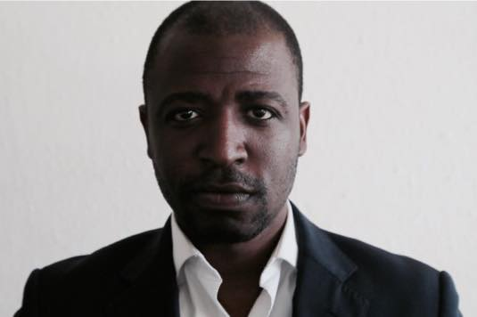

Toggle navigation
Gazu Group
About
Companies
Gazu Invest
Gazu Tech
Gazu Comodity
Gazu Supply
Gazu Entertainment
Events
Leadership
Blog
Contact
Submit
Management Team
Yagazie Anyanwu
Managing Direcor
Yagazie founded his first company at 19 and started and investment brokerage company at 21 helping investors to invest in the early stages of Uber in CapeTown South Africa, Cofounding and Cofinancing a restaurant at 23, with numerous business endevours inbetween. Having beeing involved in business for sale brokerage, PPP Investment facilitation and Comodity trading of precious stones and precious metals,Non ferous Metals, Petroluem Products and Agro comodities. He is the Managing Director and founder of Gazu Group.

Anthonio Junior
Chief Stratergy
Yagazie founded his first company at 19 and started and investment brokerage company at 21 helping investors to invest in the early stages of Uber in CapeTown South Africa, Cofounding and Cofinancing a restaurant at 23, with numerous business endevours inbetween. Having beeing involved in business for sale brokerage, PPP Investment facilitation and Comodity trading of precious stones and precious metals,Non ferous Metals, Petroluem Products and Agro comodities. He is the Managing Director and founder of Gazu Group.